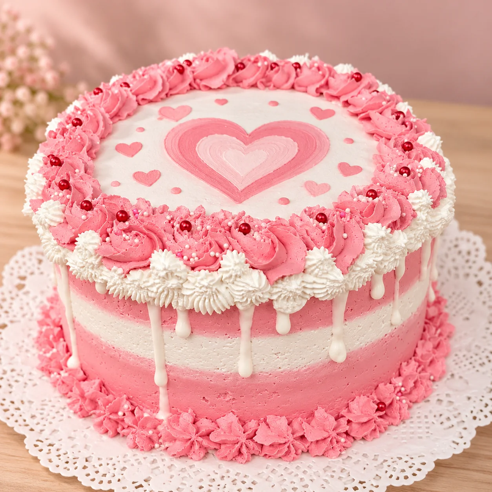
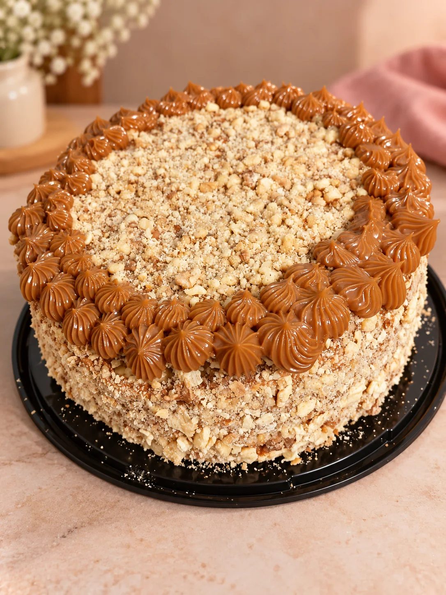
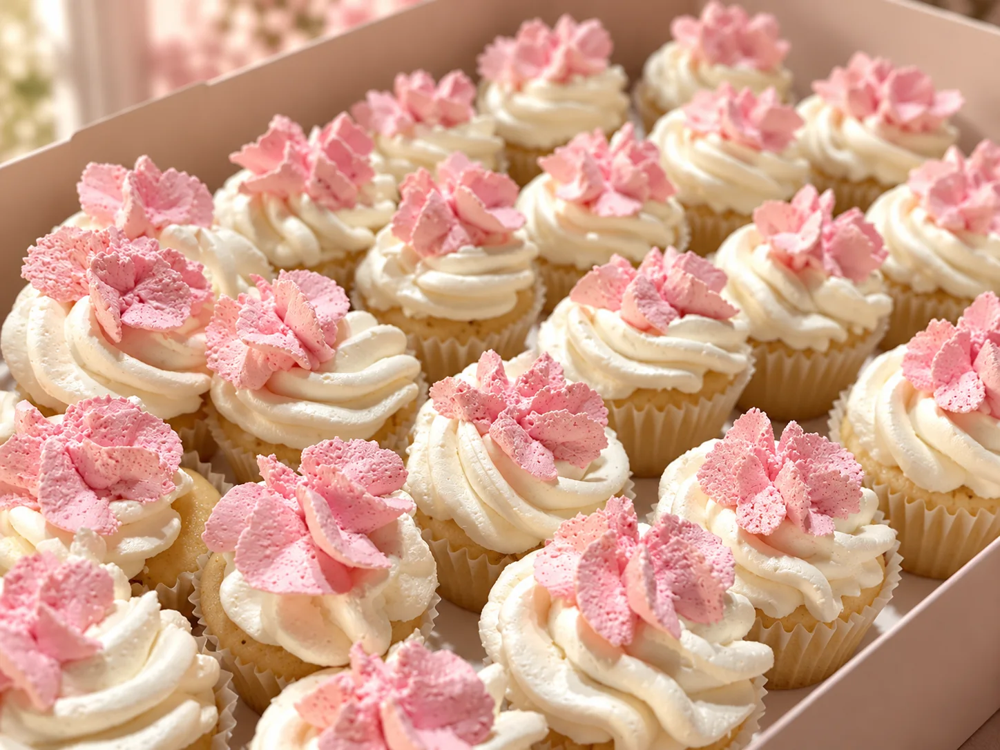
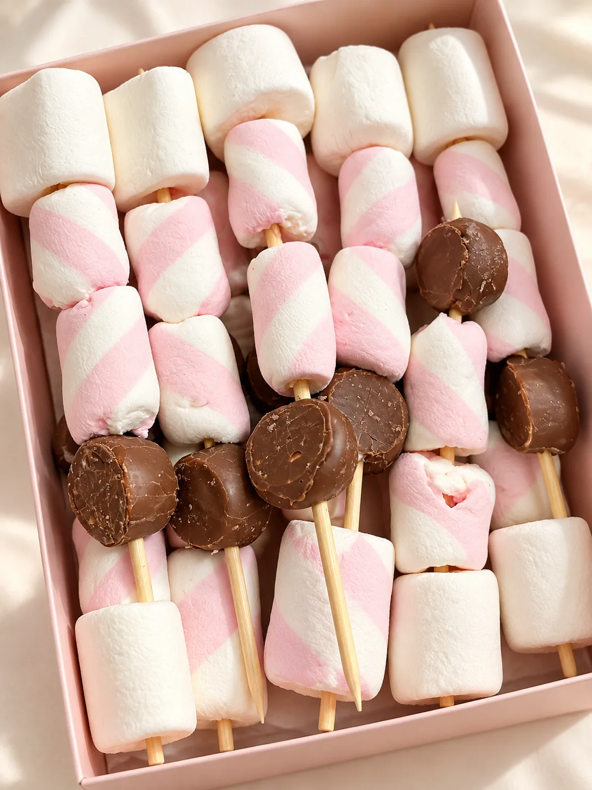
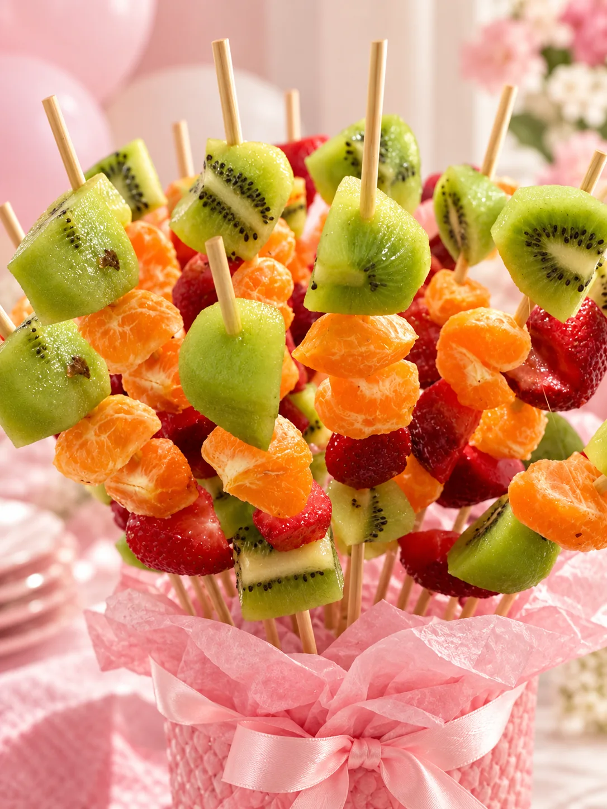
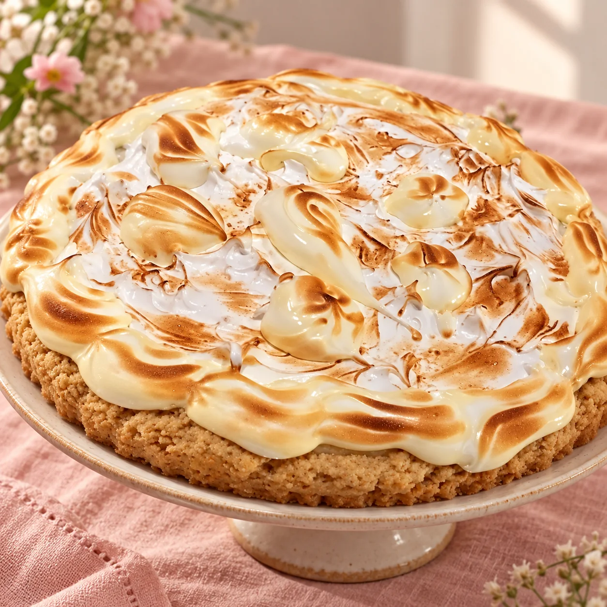
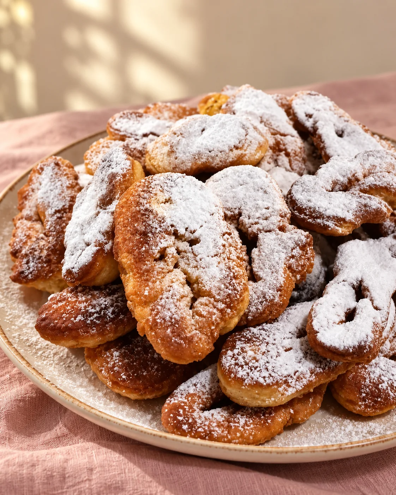
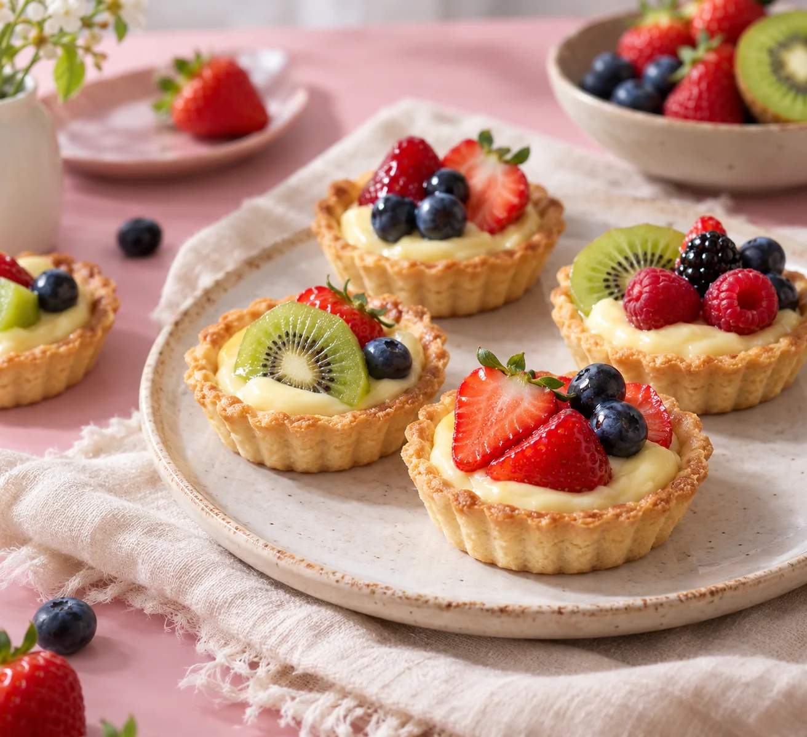
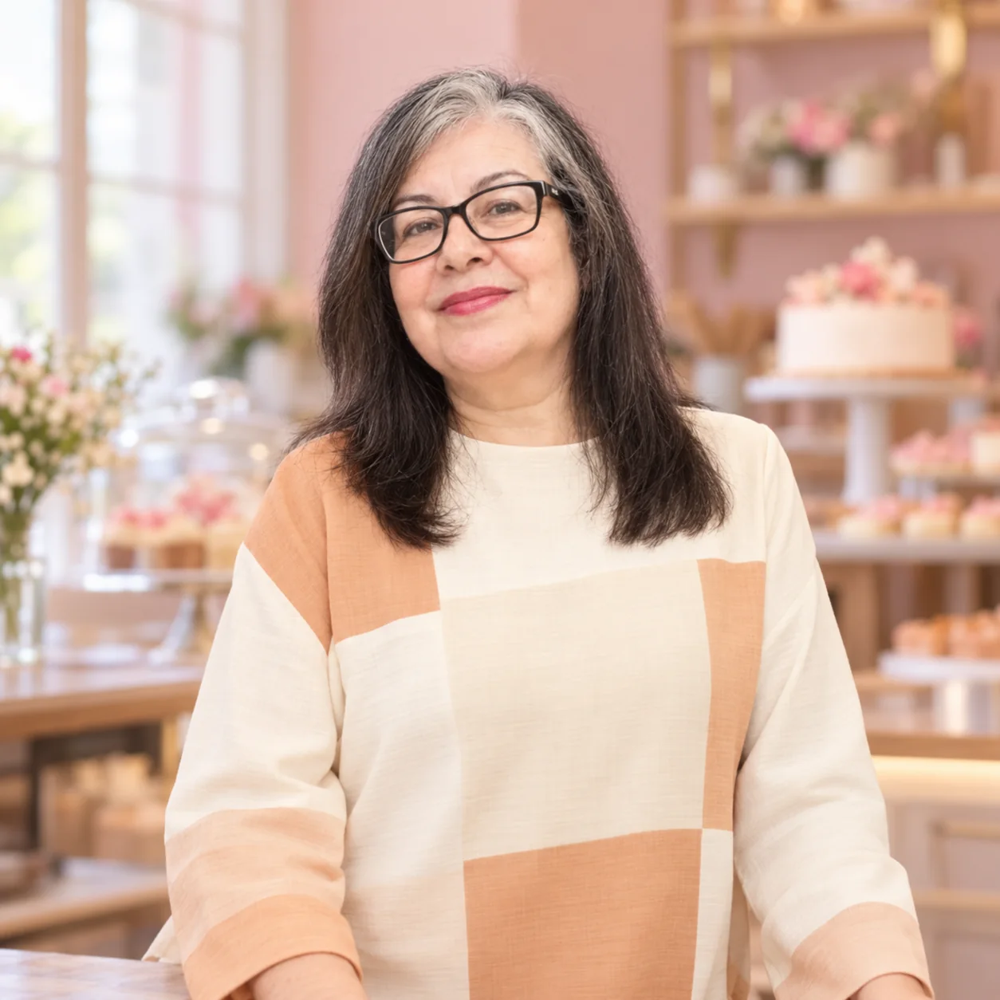

Para celebrar
↗Tortas personalizadas
Colores, detalles y un motivo especial para ser el centro de la fiesta.
Repostería hecha con corazón en Copiapó
Tortas, dulces y detalles preparados con dedicación para que cada celebración tenga un sabor propio. Desde Copiapó, Paola Blanco Iriarte pone sus manos y su cariño en cada creación.

Para cumpleaños, encuentros y esos días que merecen algo especial.
De nuestra cocina a tu celebración
Cada pedido puede tener su propio detalle. Explora algunas de las preparaciones que inspiran nuestra mesa.
Colores, detalles y un motivo especial para ser el centro de la fiesta.

Textura crocante y una terminación generosa para compartir.

Bocados suaves con crema y terminaciones llenas de color.

Rosa, blanco y chocolate en un formato perfecto para una mesa de fiesta.

Una alternativa fresca y alegre para complementar la celebración.
¿Tienes otra idea? Paola también comparte preparaciones de panadería casera y mesas saladas. Cuéntanos qué imaginas
También desde su cocina
Además de las tortas y los dulces de fiesta, Paola ha compartido preparaciones caseras como pie de limón y calzones rotos. Pregúntale por disponibilidad para tu fecha.




El corazón detrás de M y C
“Repostera y cocinera de corazón”. Así se presenta Paola, la persona detrás de cada preparación de Repostería M y C.
En su trabajo conviven las tortas para celebrar, los dulces que se comparten y las mesas pensadas para reunir a las personas. Cada detalle nace de una idea sencilla: convertir una ocasión en un recuerdo sabroso y cercano.
Cuando nos escribes, la conversación empieza con ella y con lo que quieres celebrar.
Conversemos tu ideaAsí comienza tu pedido
Cuéntanos lo que necesitas y coordinemos los detalles directamente por WhatsApp.
Inspírate con tortas, cupcakes y bocados dulces para compartir.
Una celebración, una reunión o un detalle: dinos fecha, cantidad e idea.
Paola te responderá para conversar opciones y confirmar tu pedido.
Hagamos algo especial
Escríbele directamente a Paola. Puedes empezar con una idea sencilla; los detalles los conversan por WhatsApp.
Antes de escribirnos
¡Por supuesto! Cuéntanos tu ocasión, estilo y colores por WhatsApp para conversar qué se puede preparar.
Lo ideal es escribirnos apenas tengas la fecha. Paola podrá confirmar contigo disponibilidad y tiempos para tu pedido.
El valor depende de la preparación, tamaño y detalles. Escríbenos lo que necesitas para recibir una respuesta ajustada a tu idea.